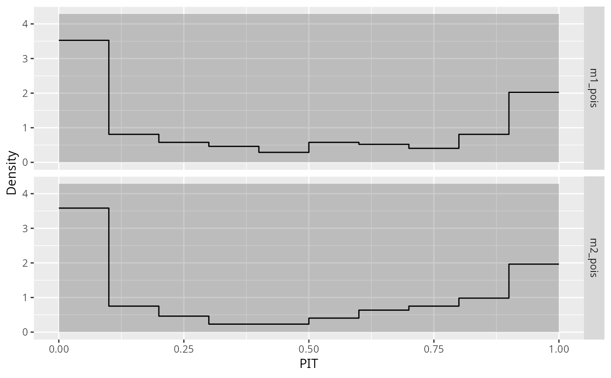

geom_* and stat_* for Producing PIT Histograms with `ggplot2`geom_pithist.RdVarious geom_* and stat_* used within
autoplot for producing PIT histograms.
stat_pithist(
mapping = NULL,
data = NULL,
geom = "pithist",
position = "identity",
na.rm = FALSE,
show.legend = NA,
inherit.aes = TRUE,
freq = FALSE,
style = c("bar", "line"),
...
)
geom_pithist(
mapping = NULL,
data = NULL,
stat = "pithist",
position = "identity",
na.rm = FALSE,
show.legend = NA,
inherit.aes = TRUE,
freq = FALSE,
style = c("bar", "line"),
...
)
stat_pithist_expected(
mapping = NULL,
data = NULL,
geom = "pithist_expected",
position = "identity",
na.rm = FALSE,
show.legend = NA,
inherit.aes = TRUE,
scale = c("uniform", "normal"),
freq = FALSE,
...
)
geom_pithist_expected(
mapping = NULL,
data = NULL,
stat = "pithist_expected",
position = "identity",
na.rm = FALSE,
show.legend = NA,
inherit.aes = TRUE,
scale = c("uniform", "normal"),
freq = FALSE,
...
)
stat_pithist_confint(
mapping = NULL,
data = NULL,
geom = "pithist_confint",
position = "identity",
na.rm = FALSE,
show.legend = NA,
inherit.aes = TRUE,
scale = c("uniform", "normal"),
level = 0.95,
type = "approximation",
freq = FALSE,
style = c("polygon", "line"),
...
)
geom_pithist_confint(
mapping = NULL,
data = NULL,
stat = "pithist_confint",
position = "identity",
na.rm = FALSE,
show.legend = NA,
inherit.aes = TRUE,
scale = c("uniform", "normal"),
level = 0.95,
type = "approximation",
freq = FALSE,
style = c("polygon", "line"),
...
)
stat_pithist_simint(
mapping = NULL,
data = NULL,
geom = "pithist_simint",
position = "identity",
na.rm = FALSE,
show.legend = NA,
inherit.aes = TRUE,
freq = FALSE,
...
)
geom_pithist_simint(
mapping = NULL,
data = NULL,
stat = "pithist_simint",
position = "identity",
na.rm = FALSE,
show.legend = NA,
inherit.aes = TRUE,
freq = FALSE,
...
)Set of aesthetic mappings created by aes(). If specified and
inherit.aes = TRUE (the default), it is combined with the default mapping
at the top level of the plot. You must supply mapping if there is no plot
mapping.
The data to be displayed in this layer. There are three options:
If NULL, the default, the data is inherited from the plot
data as specified in the call to ggplot().
A data.frame, or other object, will override the plot
data. All objects will be fortified to produce a data frame. See
fortify() for which variables will be created.
A function will be called with a single argument,
the plot data. The return value must be a data.frame, and
will be used as the layer data. A function can be created
from a formula (e.g. ~ head(.x, 10)).
The geometric object to use to display the data, either as a
ggproto Geom subclass or as a string naming the geom stripped of the
geom_ prefix (e.g. "point" rather than "geom_point")
Position adjustment, either as a string naming the adjustment
(e.g. "jitter" to use position_jitter), or the result of a call to a
position adjustment function. Use the latter if you need to change the
settings of the adjustment.
If FALSE, the default, missing values are removed with
a warning. If TRUE, missing values are silently removed.
logical. Should this layer be included in the legends?
NA, the default, includes if any aesthetics are mapped.
FALSE never includes, and TRUE always includes.
It can also be a named logical vector to finely select the aesthetics to
display.
If FALSE, overrides the default aesthetics,
rather than combining with them. This is most useful for helper functions
that define both data and aesthetics and shouldn't inherit behaviour from
the default plot specification, e.g. borders().
logical. If TRUE, the PIT histogram is represented by
frequencies, the counts component of the result; if FALSE,
probability densities, component density, are plotted (so that the
histogram has a total area of one).
character specifying the style of pithist. For style = "bar"
a traditional PIT hisogram is drawn, for style = "line" solely the upper border
line is plotted.
Other arguments passed on to layer(). These are
often aesthetics, used to set an aesthetic to a fixed value, like
colour = "red" or size = 3. They may also be parameters
to the paired geom/stat.
The statistical transformation to use on the data for this
layer, either as a ggproto Geom subclass or as a string naming the
stat stripped of the stat_ prefix (e.g. "count" rather than
"stat_count")
On which scale should the PIT residuals be computed: on the probability scale
("uniform") or on the normal scale ("normal").
numeric. The confidence level required.
character. Which type of confidence interval should be plotted: `"exact"` or `"approximation"`. According to Agresti and Coull (1998), for interval estimation of binomial proportions an approximation can be better than exact.
if (require("ggplot2")) {
## Fit model
data("CrabSatellites", package = "countreg")
m1_pois <- glm(satellites ~ width + color, data = CrabSatellites, family = poisson)
m2_pois <- glm(satellites ~ color, data = CrabSatellites, family = poisson)
## Compute pithist
p1 <- pithist(m1_pois, type = "random", plot = FALSE)
p2 <- pithist(m2_pois, type = "random", plot = FALSE)
d <- c(p1, p2)
## Create factor
main <- attr(d, "main")
main <- make.names(main, unique = TRUE)
d$group <- factor(d$group, labels = main)
## Plot bar style PIT histogram
gg1 <- ggplot(data = d) +
geom_pithist(aes(x = mid, y = observed, width = width, group = group), freq = TRUE) +
geom_pithist_simint(aes(x = mid, ymin = simint_lwr, ymax = simint_upr), freq = TRUE) +
geom_pithist_confint(aes(x = mid, y = observed, width = width), style = "line", freq = TRUE) +
geom_pithist_expected(aes(x = mid, y = observed, width = width), freq = TRUE) +
facet_grid(group ~ .) +
xlab("PIT") +
ylab("Frequency")
gg1
gg2 <- ggplot(data = d) +
geom_pithist(aes(x = mid, y = observed, width = width, group = group), freq = FALSE) +
geom_pithist_simint(aes(
x = mid, ymin = simint_lwr, ymax = simint_upr, y = observed,
width = width
), freq = FALSE) +
geom_pithist_confint(aes(x = mid, y = observed, width = width), style = "line", freq = FALSE) +
geom_pithist_expected(aes(x = mid, y = observed, width = width), freq = FALSE) +
facet_grid(group ~ .) +
xlab("PIT") +
ylab("Density")
gg2
## Plot line style PIT histogram
gg3 <- ggplot(data = d) +
geom_pithist(aes(x = mid, y = observed, width = width, group = group), style = "line") +
geom_pithist_confint(aes(x = mid, y = observed, width = width), style = "polygon") +
facet_grid(group ~ .) +
xlab("PIT") +
ylab("Density")
gg3
}
#> Loading required package: ggplot2
